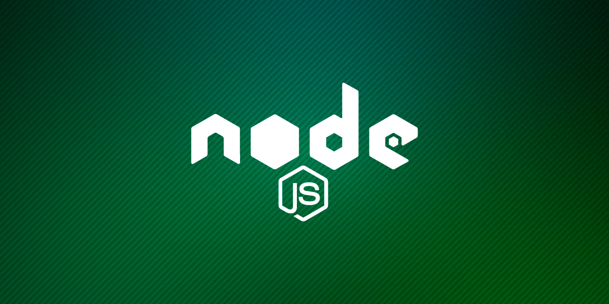

Aquí os dejo las últimas versiones de Node.js
| Version | Date | V8 | npm |
|---|---|---|---|
| Node.js 18.9.1 | 2022-09-23 | 10.2.154.15 | 8.19.1 |
| Node.js 18.9.0 | 2022-09-07 | 10.2.154.15 | 8.19.1 |
| Node.js 18.8.0 | 2022-08-24 | 10.2.154.13 | 8.18.0 |
| Node.js 18.7.0 | 2022-07-26 | 10.2.154.13 | 8.15.0 |
| Node.js 18.6.0 | 2022-07-13 | 10.2.154.4 | 8.13.2 |
Aquí están las 5 últimas versiones pero puedes consultar aquí si quieres conocer versiones más antiguas
Veamos un poco de historia de Node.js
Node.js se trata de un entorno de programación en el lenguaje JavaScript del lado del servidor, desde 2009 es posible la creación de aplicaciones FullStack usando únicamente un lenguaje de programación como en el cliente como en el servidor.
Node fue inventado en 2009 por Ryan Dahl informático que formaba parte de Joyent (dedicada a ofrecer servicios de cómputo en la nube) que a su vez se convirtió en la propietaria de la marca Node.js y la que le daría patrocinio y difusión desde el momento de su creación.
Joyent puso todo su empeño para el desarrollo de Node, sin embargo, al ser una empresa del sector privado y no una comunidad o fundación, los avances de Node comenzaron a ser muy lentos, en comparación de lo que la comunidad solicitaba y que también quería contribuir.
La comunidad al ver el brillante futuro que podría tener Node en el ecosistema web y la insuficiencia (o incompetencia) de Joyent para sacarlo adelante, decide tomar cartas en el asunto e intenta contribuir al core de Node, sin embargo Joyent se opone a reconocer cualquier cambio no supervisado por ellos bajo el nombre comercial de Node.js™, por lo que la comunidad decide lanzar un fork amigable de Node compatible con npm y liderado bajo un modelo de gobernabilidad abierta con el nombre de io.js.